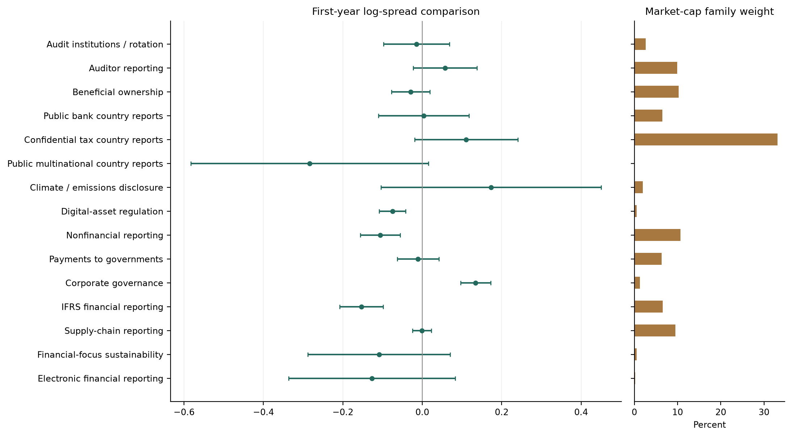
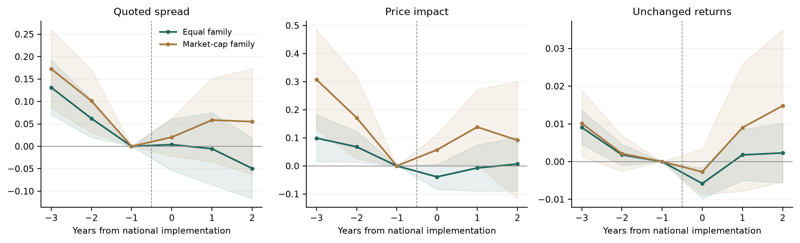

Policy diffusion
Reporting regulation across countries: market liquidity, then policy adoption.
Sample and data
| Markets | Datastream, 2000–2025. 90 jurisdictions, 99,100 company records and 1,055,142 stock-year observations. |
|---|---|
| Country averages | 2,050 country-year observations. Bid-ask spreads, price impact and unchanged daily returns. |
| Regulations | 17 families. National implementation dates and source-supported policy histories. Public disclosure, confidential tax reporting and regulatory institutions remain separate. |
| Adoption data | Earlier adoption among trade and language peers, neighbouring economic outcomes, IMF credit and aid. |
We first ask whether trading conditions change when countries implement regulation. We then ask which international connections are associated with adoption. The market panel is broad; it is not a census of every listed company.
Regulations across countries
| Regulation family | Treated countries | Supported cohort years | Adoption cohorts | Market-cap weight | Longer window |
|---|---|---|---|---|---|
| Audit institutions / rotation | 4 | 2004-2007 | 3 | 2.6% | Yes |
| Auditor reporting | 19 | 2012-2016 | 2 | 9.9% | Yes |
| Beneficial ownership | 11 | 2016-2020 | 5 | 10.3% | Yes |
| Public bank country reports | 15 | 2014 | 1 | 6.5% | Yes |
| Confidential tax country reports | 42 | 2016-2020 | 5 | 33.2% | Yes |
| Public multinational country reports | 1 | 2023 | 1 | <0.1% | No |
| Climate / emissions disclosure | 2 | 2013-2023 | 2 | 2.0% | Yes |
| Sectoral climate rules | - | - | - | - | No |
| Digital-asset regulation | 2 | 2018-2020 | 2 | 0.5% | Yes |
| Nonfinancial reporting | 23 | 2002-2019 | 10 | 10.7% | Yes |
| Payments to governments | 5 | 2014-2015 | 2 | 6.4% | No |
| Corporate governance | 6 | 2001-2004 | 4 | 1.2% | No |
| IFRS financial reporting | 21 | 2005-2011 | 6 | 6.5% | No |
| Supply-chain reporting | 5 | 2012-2022 | 5 | 9.5% | Yes |
| Financial-focus sustainability | 3 | 2024-2025 | 2 | 0.5% | No |
| Sustainability frameworks | - | - | - | - | No |
| Electronic financial reporting | 1 | 2007 | 1 | 0.2% | No |
Supported adoption cohorts through 2025; future schedules are excluded. “No” means insufficient longer-window support. Unsupported families receive no estimated effect.
Nonfinancial reporting covers 23 adopting jurisdictions and IFRS 21 in the first-year comparisons. The estimates concern the national stock market, including companies with different reporting obligations.
1. Liquidity
For each regulation and adoption cohort, we hold the company sample fixed and average liquidity changes within countries. We compare adopting countries with documented comparison countries, then weight country averages by prior-year GDP.
Across regulation families, we report equal weights and weights based on sampled companies’ market value before implementation. Both columns use the same underlying country comparisons.
| Window and outcome | Equal family Estimate [interval] | Market-cap family Estimate [interval] |
|---|---|---|
| First year: 15 families Bid-ask spread (log) | -0.029 [-0.068, +0.011] | +0.021 [-0.021, +0.063] |
| First year: 15 families Price impact (log) | -0.045 [-0.087, -0.003] | +0.019 [-0.050, +0.087] |
| First year: 15 families Unchanged returns (fraction) | -0.0082 [-0.0112, -0.0052] | -0.0027 [-0.0065, +0.0012] |
| Years 0-2: 9 families Bid-ask spread (log) | -0.017 [-0.078, +0.044] | +0.045 [-0.035, +0.125] |
| Years 0-2: 9 families Price impact (log) | -0.013 [-0.081, +0.054] | +0.096 [-0.024, +0.216] |
| Years 0-2: 9 families Unchanged returns (fraction) | -0.0006 [-0.0064, +0.0053] | +0.0070 [-0.0070, +0.0210] |
Brackets show 95% country-clustered conditional intervals. Higher values indicate lower liquidity. Log points and fractions are not percentages. First-year and longer-window samples differ.
The first-year spread estimates have opposite signs under the two weights, and neither is precise. Only the equal-family unchanged-return result survives correction across the 12 principal liquidity comparisons. The evidence does not establish a common liquidity gain.

Family results differ. Confidential tax country reporting receives 33.2% of market-cap weight; auditor reporting receives 9.9%. These weights describe the sampled adoption cohorts.

Differences appear before adoption. Overlapping reforms, common legal waves and prior disclosure limit a causal interpretation of subsequent changes.
2. Policy diffusion
Competition asks whether countries follow trade peers. Learning asks whether neighbours’ earlier outcomes matter. Emulation asks whether countries follow language peers. External finance measures IMF credit and aid relative to GDP.
We compare adoption decisions within the same regulation family and year. Each pair of weighted models uses identical observations. Equal weights give each represented family the same total weight; market-cap weights use the pre-adoption family values from the liquidity analysis.
| Mechanism | Rows / countries / families | Equal family Coefficient [adjusted p] | Market-cap family Coefficient [adjusted p] |
|---|---|---|---|
| Competition | 375 / 76 / 8 | +0.346 [1.000] | +0.044 [1.000] |
| Learning | 41 / 25 / 2 | Not estimated | Not estimated |
| Emulation | 419 / 53 / 12 | +0.361 [1.000] | +0.215 [1.000] |
| External finance | 154 / 30 / 7 | -1.111 [0.142] | -0.967 [0.018] |
Positive coefficients indicate a positive association with adoption. Brackets show adjusted p-values across eight principal comparisons. Samples differ across mechanisms because historical data differ.
Only the external-finance association under market-cap family weights survives adjustment across the eight planned comparisons. The learning comparison has insufficient observations. None of the weighted associations survives the broader matrix correction.
These associations concern recorded national decisions. They do not establish that one country caused another to adopt.
Paper and appendix
Paper ↗ · Data tables and code ↗ · Manuscript ↗
Design and scope
Each country needs 30 companies with complete outcomes; each adoption comparison needs three comparison countries. One pre-adoption share line per company is held fixed. The longer window requires observations from years −3 through +2. Already-adopting countries are excluded as controls. Missing policy histories remain unknown. Standard errors allow observations within a country to move together; common legal waves can create additional uncertainty.
The country-level analysis does not require a global Worldscope financial export. It measures national market exposure. Company-specific reporting thresholds, exemptions and actual filing dates are a separate research extension.
Country coverage · Policy calendar · Country aggregation checks
Complete results
All family liquidity estimates · Liquidity weights · Event profiles · Both diffusion weights and sensitivities · Diffusion weights · Full unweighted diffusion matrix
All outcomes, unsupported comparisons, timing alternatives and model failures are retained. Diffusion sensitivities add economic controls, independent national decisions, liquidity-based learning and combined mechanisms. The broad correction includes the weighted sensitivities and the complete stable unweighted matrix.
Adoption status and timing
The main models ask when a country first implements a recorded policy. This sensitivity asks whether a country already has the policy. It retains both family weights.
| Mechanism | Rows / countries / families | Equal family coefficient [adjusted p] | Market-cap family coefficient [adjusted p] |
|---|---|---|---|
| Competition | 2,214 / 76 / 8 | -0.103 [1.000] | -0.347 [1.000] |
| Learning | 619 / 66 / 3 | -0.050 [1.000] | +0.325 [1.000] |
| Emulation | 1,845 / 53 / 12 | -1.427 [1.000] | -0.579 [1.000] |
| External finance | 407 / 30 / 7 | -0.998 [1.000] | -0.915 [1.000] |
Exploratory status models. Brackets show adjusted p-values across the complete stable weighted and unweighted matrix.
Some unweighted status models show associations, especially for public bank reporting. None of the pooled weighted status associations survives the broad correction. Shared legal groups and persistent reporting regimes can generate status associations without identifying the timing or cause of adoption.
Company evidence and source reviews
Company-specific studies supplement the global country analysis. Their selected-company estimates do not enter the headline pool.
Company-study appendix · Source reviews · Global eligibility audit · Jurisdiction sources · Worldscope coverage · Regulation records and sources
Global company eligibility remains incomplete. The recovered Worldscope export contains US records only; it is not needed to compute country-average liquidity.
References
Krueger, Sautner, Tang and Zhong (2023), The Effects of Mandatory ESG Disclosure Around the World, supplied working paper.
Koning, Mertens and Roosenboom (2018), Drivers of institutional change around the world: The case of IFRS, supplied JIBS article.